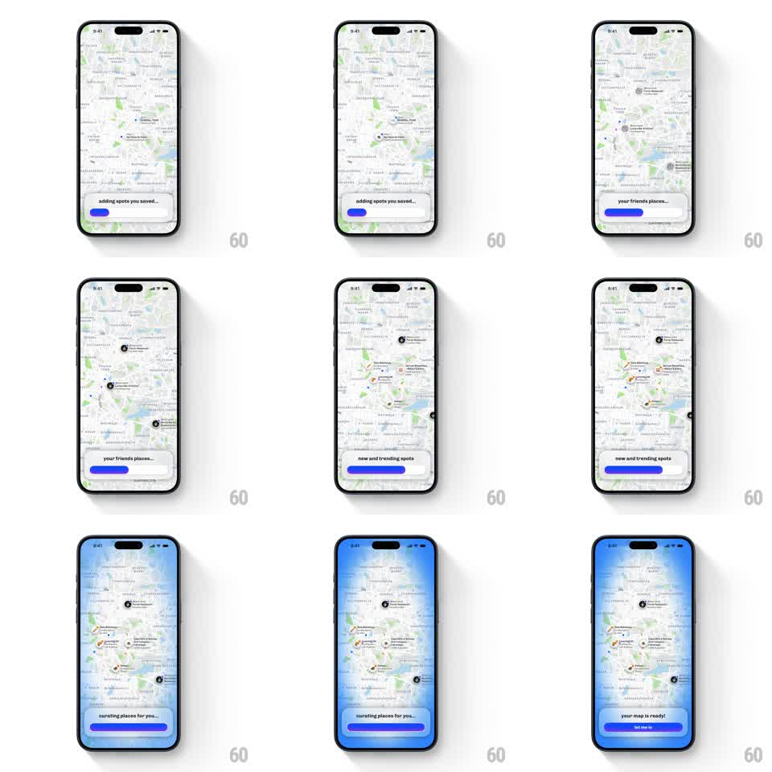

Media
Frame-by-frame

Rebuild this animation 1:1: Corner's map-warming onboarding - a full-bleed city map loads in stages ("getting your map ready...", "adding spots you saved...", "your friends places...", "new and trending spots", "curating places for you...") as markers drop, ending in a blue glow and a "your map is ready!" pill that becomes the CTA.

Rebuild this animation 1:1: Corner's map-warming onboarding - a full-bleed city map loads in stages ("getting your map ready...", "adding spots you saved...", "your friends places...", "new and trending spots", "curating places for you...") as markers drop, ending in a blue glow and a "your map is ready!" pill that becomes the CTA.
## Integration
Integration: stack-agnostic spec - springs given as stiffness/damping, timed motions as duration + curve; map every value to your framework and animation library of choice.
## Scene
Corner onboarding: a full-bleed light-style city map (Bengaluru streets, green parks, blue lakes). Bottom: a floating white pill holding the current status line and a blue progress bar. Map content: black circular pins with labels, then colorful category chips (food, events) clustered near the center.
## Motion spec
Pattern: staged marker drops with a progress pill morphing into the CTA.
- Stage 1 "getting your map ready..." (progress ~15%): the map fades in and gently settles (scale 1.05 -> 1, 800ms).
- Stage 2 "adding spots you saved..." (~35%): black pins drop onto their spots one by one (fall 40px with a soft bounce, spring ~400/20, 120ms apart), labels fading in beside them.
- Stage 3 "your friends places..." (~55%): a second wave of pins drops in a new cluster, same physics.
- Stage 4 "new and trending spots" (~75%): colorful category chips pop in (scale 0 -> 1, spring ~450/16, staggered 60ms).
- Stage 5 "curating places for you..." (~90%): the map drifts slightly to center the densest cluster (300ms ease).
- Finale: a blue gradient glow floods in from the screen edges (500ms), the progress bar completes, and the pill's text crossfades to "your map is ready!" (250ms) as the bar morphs into a full-width blue CTA button (width + height expansion, 350ms, ease-out).
## Calibration
- The status text swaps exactly on its stage's progress threshold - never early.
- Pin drops are the only bouncy element; the pill morphs with smooth eases, no bounce.
## Reduced motion
Pins fade in at position; the pill crossfades to the CTA without morphing.
## Don't miss
- The pill stays pinned bottom-center through every stage - only its contents and final shape change.
- The blue finale glow comes from the edges inward, leaving the map readable underneath.